计算机的运算方法 链接到标题
无符号数和有符号数 链接到标题
无符号数 链接到标题
寄存器的位数反映无符号数的表示范围。
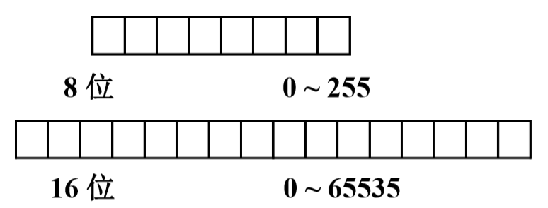
有符号数 链接到标题
机器数与真值 链接到标题
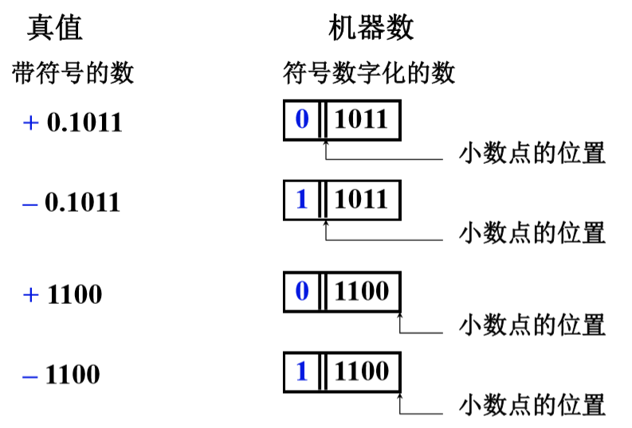
原码表示法 链接到标题
- 整数
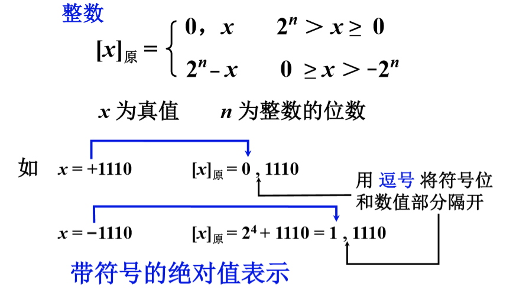
- 小数
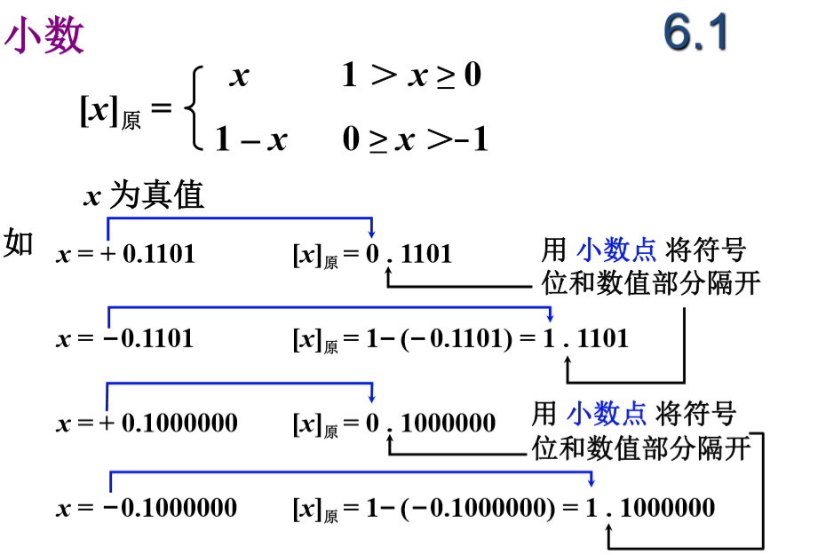
举例 链接到标题
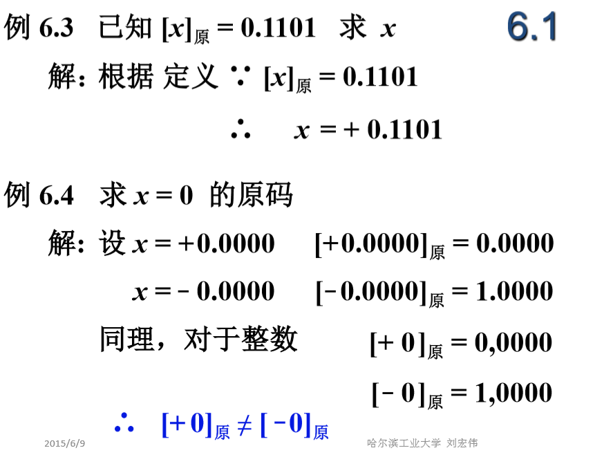
补码表示法 链接到标题
补的概念 链接到标题
原码的特点是简单，直观，但是如果用原码做加法，一个正数和一个负数相加，结果的符号可正可负，需要找到一个与负数等价的正数来代替这个负数，假设一个时钟的时针指向六点，要想将时针指向三点方向，有两个办法，其一是将时针-3，其二是将时针 +9.可见-3 可用 +9 代替，这样将减法变为加法，称 +9 是-3 以 12 为模的补数。
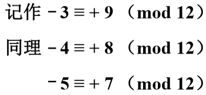
结论 链接到标题
- 一个负数加上“模”即得该负数的补数
- 一个整数和一个负数互为补数时，他们绝对值之和即为模数
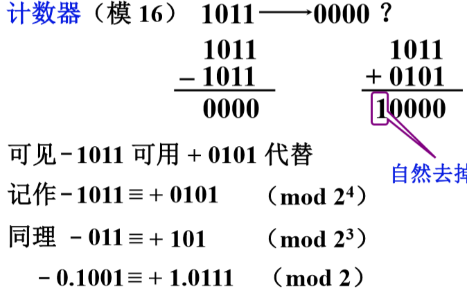
正数的补数即为其本身 链接到标题
两个互为补数的数分别加上模，结果仍互为补数。假设寄存器只能存 4 位数值，则需要将溢出位丢弃，可见正数的补数和负数的补数相同。为了区分正数与负数的符号，需要再加符号位，为了添加符号位还需要 +2^4,则两次一共 +2^(4+1)。这样无论正数还是负数的补码，都添加了符号位用于区分。
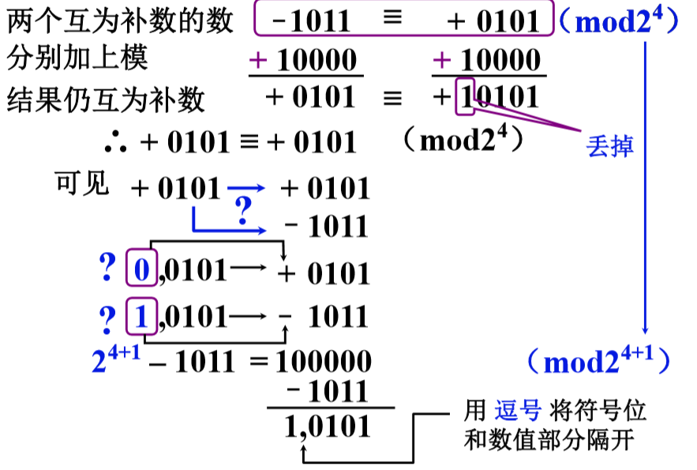
补码定义 链接到标题
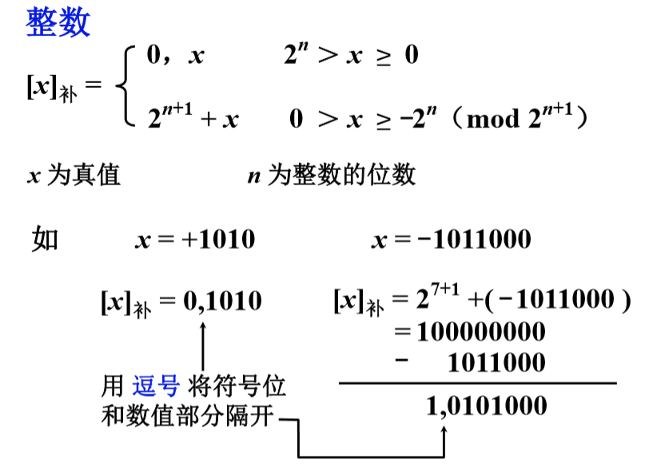
n 不包括符号位
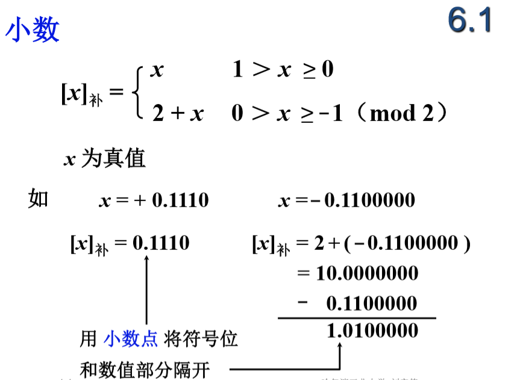
正数用逗号隔开符号位，小数使用点号隔开符号位
求补码的快捷方式 链接到标题
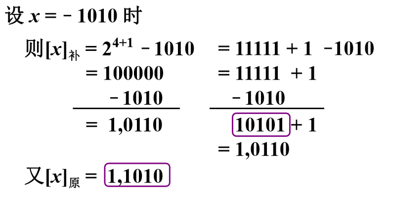
计算 100000-1010 时可以用 11111-1010+1 代替.
当真值为负时，补码可用原码除符号位外每位取反，末位加 1 求得。
+0 与-0 补码相同
举例 链接到标题
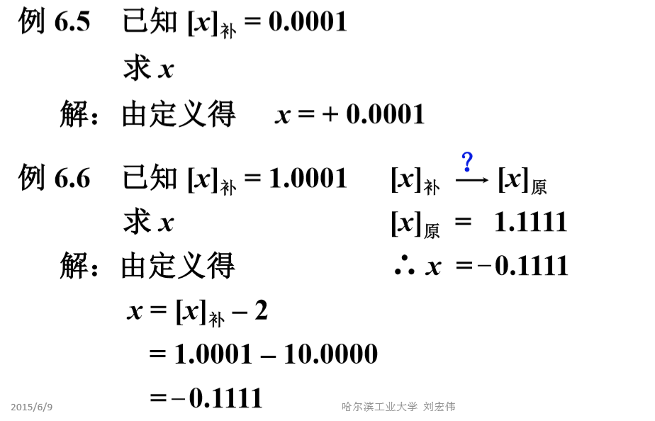
反码表示法 链接到标题
定义 链接到标题
- 正数
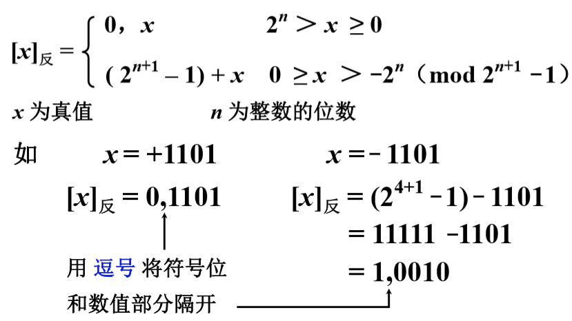
- 小数
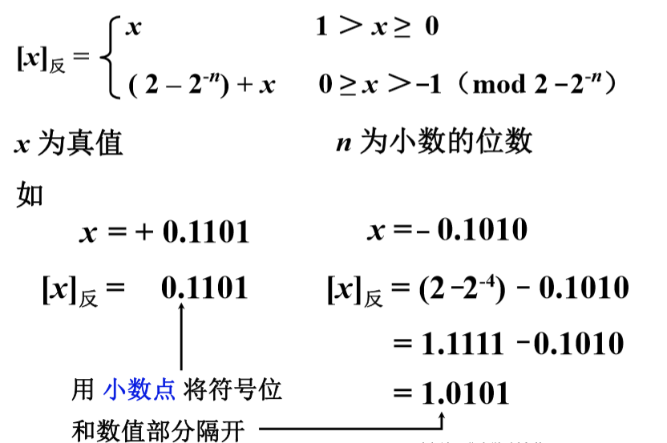
举例 链接到标题
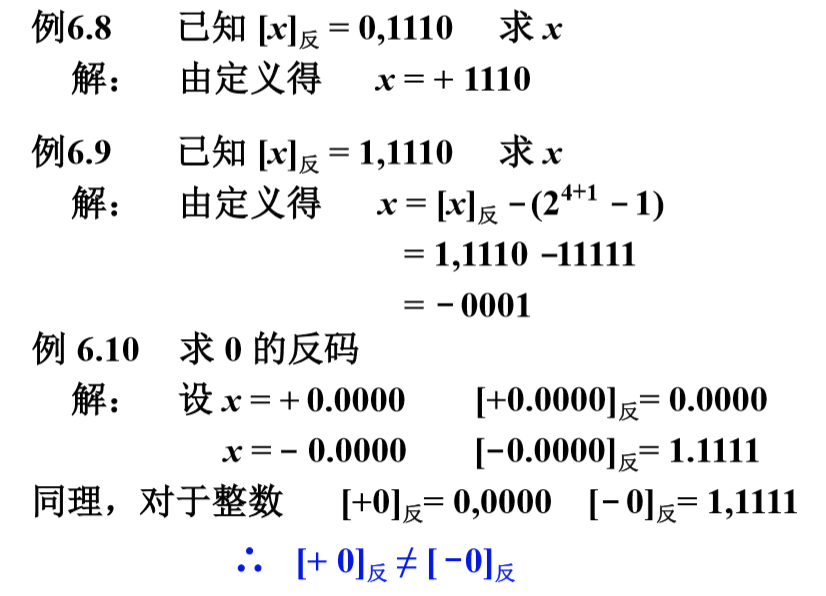
三种机器数的小结 链接到标题
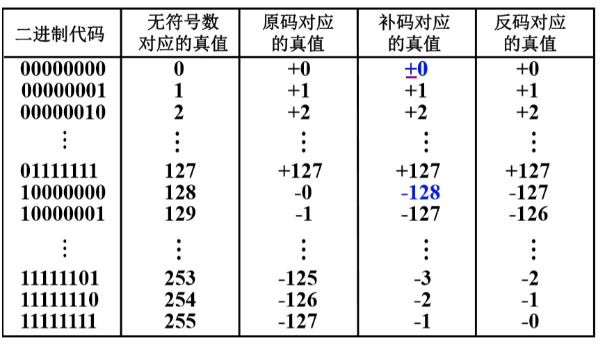
- 最高位位符号位，书写上用“，”(正数)或“.”（小数）将数值部分和符号位隔开
- 对于正数，原码=补码=反码
- 对于负数，符号位为 1，其数值部分原码除符号位外每位取反末位加 1 等于补码，原码除符号位外每位取反等于反码。
例题 链接到标题
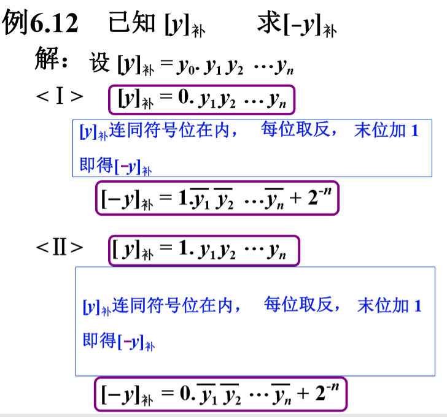
移码表示法 链接到标题
因为补码表示很难直接判断其真值的大小，所以使用移码进行比较。
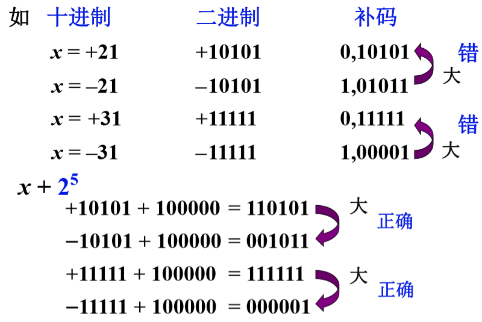
移码实际是将真值向上移了 2^n.
移码定义 链接到标题
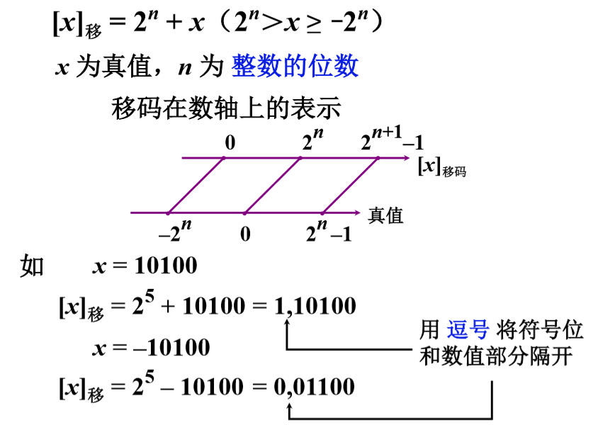
移码和补码的比较 链接到标题
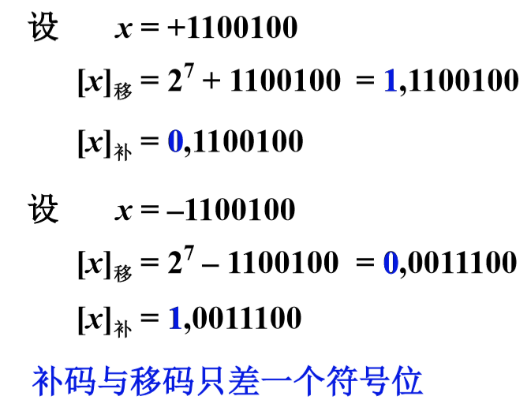
移码的特点 链接到标题
用移码表示浮点数的阶码，能方便的判断浮点数的阶码大小。